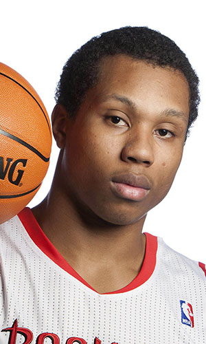

|  |
Матчи |
72 |
|
Передачи (всего/среднее) |
9 |
0.2 |
| В основе |
2 |
|
Подборы в защите (всего/среднее) |
53 |
1.3 |
| Время (всего/среднее) |
362:50 |
8:38 |
Подборы в атаке (всего/среднее) |
26 |
0.6 |
| Очки (всего/среднее) |
80 |
1.9 |
Подборы (всего/среднее) |
79 |
1.9 |
| 2-очковые броски (всего/среднее) |
30/49 |
0.7/1.2 |
Перехваты (всего/среднее) |
7 |
0.2 |
| 2-очковые броски (% реализации) |
61.2% |
|
Потери (всего/среднее) |
11 |
0.3 |
| 3-очковые броски (всего/среднее) |
0/0 |
0/0 |
Блокшоты (всего/среднее) |
11 |
0.3 |
| 3-очковые броски (% реализации) |
0% |
|
Блокшоты соперника (всего/среднее) |
9 |
0.2 |
| Штрафные броски (всего/среднее) |
20/39 |
0.5/0.9 |
Фолы (всего/среднее) |
53 |
1.3 |
| Грег Смит |
Штрафные броски (% реализации) |
51.3% |
|
Коэффициент полезности (всего/среднее) |
75 |
1.8 |